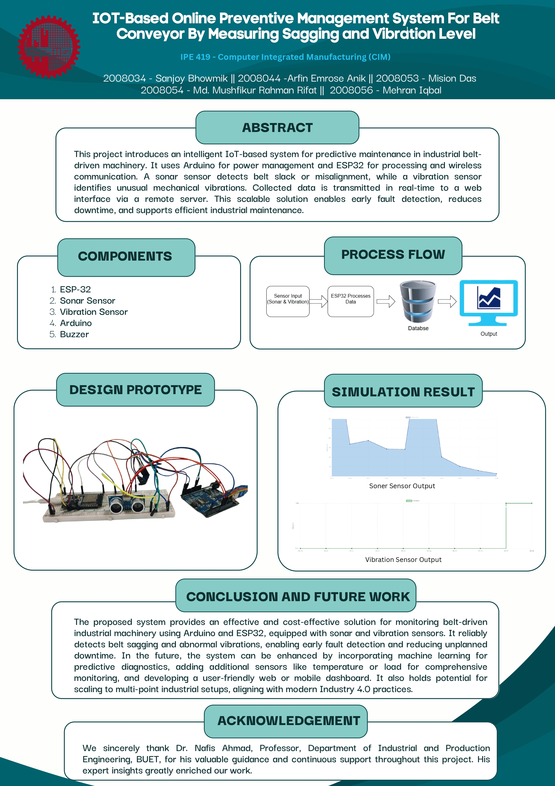

Manual inspection of vibration and proximity hazards is inefficient and unreliable in industrial and safety-critical areas. An IoT-based system using sonar and vibration sensors allows real-time remote monitoring and instant alerting, reducing risk and enabling predictive maintenance.
| Device / Component | Quantity | Task / Function |
|---|---|---|
| HC-SR04 Ultrasonic Sensor | 1 | Measures distance to obstacles |
| ADXL345 Accelerometer | 1 | Detects abnormal vibration |
| Buzzer | 1 | Alerts if object is too close (< 100cm) |
| ESP32/ESP8266 | 1 | Uploads data to Firebase in real time |
| Arduino UNO | 1 | Sensor interface & processing |
| Jumper Wires | Multiple | Connections |

#include <Wire.h>
#include <Adafruit_Sensor.h>
#include <Adafruit_ADXL345_U.h>
Adafruit_ADXL345_Unified accel = Adafruit_ADXL345_Unified(12345);
// Pins
const int trigPin = 9;
const int echoPin = 10;
const int buzzerPin = 11;
const float vibrationThreshold = 0.3; // m/s²
const unsigned long checkInterval = 1000; // 1 second
bool vibrationDetected = false;
unsigned long lastCheckTime = 0;
void setup() {
Serial.begin(9600);
pinMode(trigPin, OUTPUT);
pinMode(echoPin, INPUT);
pinMode(buzzerPin, OUTPUT);
if (!accel.begin()) {
while (1); // Stop if ADXL345 not found
}
accel.setRange(ADXL345_RANGE_16_G);
}
void loop() {
sensors_event_t event;
accel.getEvent(&event);
float totalAccel = sqrt(
event.acceleration.x * event.acceleration.x +
event.acceleration.y * event.acceleration.y +
event.acceleration.z * event.acceleration.z
);
float vibration = abs(totalAccel - 9.81);
if (vibration > vibrationThreshold) {
vibrationDetected = true;
}
// --- Every 1 second ---
if (millis() - lastCheckTime >= checkInterval) {
digitalWrite(trigPin, LOW);
delayMicroseconds(2);
digitalWrite(trigPin, HIGH);
delayMicroseconds(10);
digitalWrite(trigPin, LOW);
long duration = pulseIn(echoPin, HIGH);
int distanceCM = duration * 0.034 / 2;
// --- Buzzer Control ---
if (distanceCM < 100) {
digitalWrite(buzzerPin, HIGH);
} else {
digitalWrite(buzzerPin, LOW);
}
// --- Serial Output for ESP32 ---
int vibrationFlag = vibrationDetected ? 1 : 0;
Serial.print(distanceCM);
Serial.print(",");
Serial.println(vibrationFlag); // Binary 1 or 0
// Reset
vibrationDetected = false;
lastCheckTime = millis();
}
delay(20); // Sample rate
}
| Timestamp | Distance (cm) | Vibration |
|---|